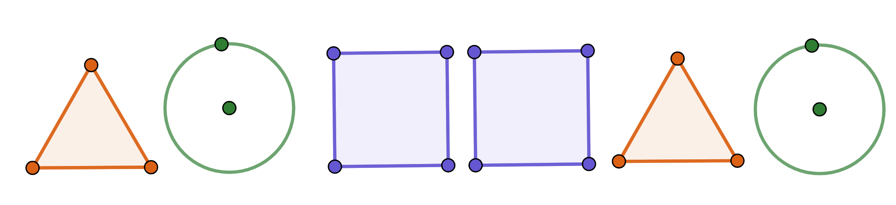

What You Should Know - Animation-ish: Pattern Animation
 Important Vocabulary
Important Vocabulary
- Pattern - a shape or number sequence that repeats or grows in a predictable way
- Rule - a specific mathematical operation, repeating structure, or number sequence allows you to figure out the next shape or number in a pattern
- Number Pattern - a number sequence that follows a rule made up of a mathematical operation (for example, in the pattern 2, 4, 6, 8 the rule would be to add 2)
- Growing Pattern - a shape pattern that follows a number sequence (for example, in the pattern || ||| |||| ||||| the rule would be to add one | each time)
- Core - the basic repeating part of a repeating pattern (for example, in the pattern 33243324, 3324 is the core because it is the part that is repeated to create the pattern)
What is a Pattern?
When you think of a pattern, what comes to mind? You may think of weather patterns in a specific season, or art like wallpaper, or even your favorite striped shirt.
In math, we use patterns to show shapes and numbers that follow a certain rule. Rules in patterns help us to predict what will come next. Keep reading to learn about the different types of patterns and how we can determine their rules.
Types of Patterns
There are several different types of patterns that we may see in math: repeating patterns, number patterns, and growing patterns. Each type of pattern has its own characteristics.
A repeating pattern can be created using numbers or shapes. This is an example of a repeating pattern made of shapes. What do you think would come next? A repeating pattern is made up of a core that repeats over and over. The core allows us to figure out what shape would come next! The core in this pattern is triangle, circle, square, square because that is the part that repeats. We can tell that it starts over because we see another triangle, showing where the end of the pattern is.

Sometimes, patterns grow instead of repeating. Shape patterns that grow are called growing patterns. Growing patterns do not have a core. We can write the rule of growing patterns as a mathematical expression. Look at the pattern below. How many triangles are being added each time? Since there are two additional triangles each time the pattern grows, the rule would be: add two.
Number patterns usually have a rule that explains the relationship of the numbers in the pattern by adding, subtracting, multiplying, or dividing. For example, you may see a pattern like 48, 24, 12, 6. Each number in the pattern is halved to find the next number, so the rule would be: divide by 2.
Sometimes, number patterns have more than one operation in the rule. A pattern like 2, 4, 5, 10, 11 has two different operations happening! If we just looked at the first two numbers in the pattern (2, 4), we may think that this pattern is multiplying by 2. But as we keep going, we can see that the rule for this pattern would be: multiply by 2, then add 1. This rule works for the rest of the pattern, so we know it is correct.
Career Connection and Real-World Application
Where do you see animations in your life? Beyond watching cartoons on television, animations are an important part of our everyday life. Animations are created to communicate information and even keep you safe.
Have you ever pushed a button at a crosswalk to cross the street safely? Engineers program crosswalk signs to communicate when it is safe for people to cross the street using animations. An animation of a person walking lets you know it's safe to cross, when the light is about to change, an animated countdown appears. Finally, a red hand animation appears to communicate that it is no longer safe to cross.